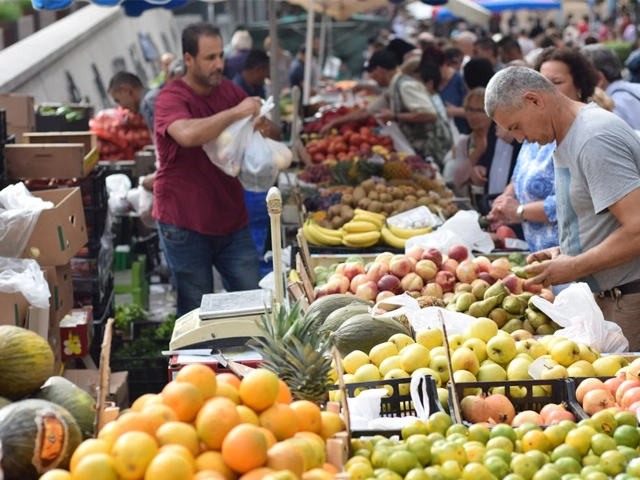

Welcome to Girosto
Consumers কীভাবে নিরাপদ কৃষিপণ্য বেছে নেবেন?
বাজারে গিয়ে সবজি, ফল, চাল, মসলা বা মধু কেনার সময় আমরা প্রায়ই একই প্রশ্নে পড়ি: এই পণ্যটি কি সত্যিই নিরাপদ? দেখতে তাজা মানেই কি ভালো? দাম বেশি হলেই কি মান ভালো? আজকাল নিরাপদ কৃষিপণ্য চেনা তাই শুধু সচেতনতার বিষয় নয়, পরিবারের স্বাস্থ্যরক্ষার অংশ।
ভালো খবর হলো, কয়েকটি সহজ অভ্যাস মেনে চললে ঝুঁকি অনেকটা কমিয়ে আনা যায়। এই লেখায় ভোক্তা হিসেবে আপনি কী দেখবেন, কী জিজ্ঞেস করবেন এবং কী এড়িয়ে চলবেন, তা ধাপে ধাপে জানাব।
আরও জানতে কল করুননিরাপদ কৃষিপণ্য বলতে কী বোঝায়?
নিরাপদ কৃষিপণ্য হলো এমন খাদ্যপণ্য, যা চাষ, সংগ্রহ, প্রক্রিয়াকরণ, পরিবহন ও সংরক্ষণের প্রতিটি ধাপে স্বাস্থ্যঝুঁকিমুক্ত থাকে। অর্থাৎ পণ্যটিতে থাকবে না:
- অনুমোদিত মাত্রার বেশি কীটনাশক বা রাসায়নিক সারের অবশিষ্টাংশ
- ফরমালিন, কার্বাইডের মতো নিষিদ্ধ বা ক্ষতিকর সংরক্ষণ ও পাকানোর উপাদান
- ক্ষতিকর কৃত্রিম রং বা ভেজাল উপাদান
- অস্বাস্থ্যকর পরিবেশে প্রক্রিয়াকরণ বা সংরক্ষণের দূষণ
নিরাপদ কৃষিপণ্য বেছে নেয়ার টিপস
নিরাপদ কৃষিপণ্য বেছে নিতে পণ্যের সতেজতা, উৎপাদন পদ্ধতি ও পরিচ্ছন্নতার দিকে নজর দেওয়া জরুরি। কেনার আগে পণ্যের মান, উৎস ও সংরক্ষণের অবস্থা যাচাই করলে স্বাস্থ্যঝুঁকি কমানো যায়।
১. পণ্যের উৎস জানার চেষ্টা করুন
নিরাপদ খাবারের প্রথম শর্ত হলো উৎস সম্পর্কে স্বচ্ছতা। পণ্যটি কোথা থেকে এসেছে, কারা চাষ করেছেন, কীভাবে প্রক্রিয়াজাত হয়েছে, এসব প্রশ্নের উত্তর দিতে পারে এমন বিক্রেতাকে বেছে নিন। যে বিক্রেতা উৎস নিয়ে পরিষ্কার কথা বলতে পারেন না, তাঁর পণ্য নিয়ে বাড়তি সতর্ক থাকুন।
২. প্যাকেটের লেবেল মন দিয়ে পড়ুন
তথ্যহীন, ঝাপসা ছাপা বা হাতে লেখা লেবেলের পণ্য কেনার আগে দুবার ভাবুন। প্যাকেটজাত পণ্য কেনার সময় লেবেলে এই তথ্যগুলো খুঁজুন:
- উৎপাদনকারী বা সরবরাহকারীর নাম ও ঠিকানা
- উৎপাদন ও মেয়াদোত্তীর্ণের তারিখ
- উপাদানের তালিকা ও নিট ওজন
- বিএসটিআই বা সংশ্লিষ্ট কর্তৃপক্ষের অনুমোদনের তথ্য (যেসব পণ্যে প্রযোজ্য)
৩. মৌসুমি পণ্যকে অগ্রাধিকার দিন
যে ফল বা সবজি তার নিজস্ব মৌসুমে উঠেছে, সেটি সাধারণত কম রাসায়নিক ও কম সংরক্ষণ-প্রক্রিয়ায় বাজারে আসে। অসময়ে অতিরিক্ত উজ্জ্বল, একই রঙের ও নিখুঁত আকৃতির ফল দেখলে সন্দেহ করা যায় যে পাকানো বা সংরক্ষণে কৃত্রিম পদ্ধতি ব্যবহার হয়েছে।
৪. রং, গন্ধ ও স্বাদে অস্বাভাবিকতা খুঁজুন
মনে রাখবেন, শুধু চোখে দেখে বা গন্ধ শুঁকে সবসময় নিশ্চিত হওয়া যায় না। এগুলো সতর্কতার সংকেত মাত্র, চূড়ান্ত প্রমাণ নয়।
- ফল: বাইরে গাঢ় হলুদ, কিন্তু ভেতরে শক্ত ও কষযুক্ত হলে কৃত্রিমভাবে পাকানোর সম্ভাবনা থাকে।
- সবজি: অস্বাভাবিক চকচকে ভাব বা অতিরিক্ত গাঢ় সবুজ রং খেয়াল করুন।
- মসলা: গুঁড়ো মসলার রং যদি অস্বাভাবিক উজ্জ্বল হয়, তবে রং মেশানোর আশঙ্কা থাকতে পারে।
৫. গুঁড়ো মসলার ক্ষেত্রে বাড়তি সতর্ক থাকুন
হলুদ, মরিচ, জিরা ও ধনিয়ার মতো গুঁড়ো মসলায় ভেজালের ঝুঁকি তুলনামূলক বেশি, কারণ গুঁড়ো অবস্থায় আসল-নকল আলাদা করা কঠিন। এসব ক্ষেত্রে:
- সম্ভব হলে আস্ত মসলা কিনে নিজে গুঁড়ো করুন
- খোলা বা প্যাকেটবিহীন গুঁড়ো মসলা এড়িয়ে চলুন
- পরিচিত, বিশ্বস্ত ও উৎস-সচেতন সরবরাহকারীর কাছ থেকে কিনুন
৬. অস্বাভাবিক কম দামে প্রলুব্ধ হবেন না
বাজারদরের চেয়ে অনেক কম দামে আকর্ষণীয় অফার দেখলে থমকে দাঁড়ান। নিরাপদ চাষ, যত্নশীল প্রক্রিয়াকরণ ও পরিচ্ছন্ন সংরক্ষণে খরচ বেশি হয়। এর চেয়ে অনেক কম দামে দেওয়া পণ্যে কোথাও না কোথাও আপস করা হয়েছে, এমন সম্ভাবনা উড়িয়ে দেওয়া যায় না। অবশ্য বেশি দাম মানেই ভালো মান, এমনটাও নয়। তাই দাম, উৎস ও লেবেল একসঙ্গে বিচার করুন।
৭. ঘরে এনে সঠিকভাবে ধুয়ে ও সংরক্ষণ করুন
নিরাপদ পণ্য কেনার পর সঠিক ব্যবহারও জরুরি:
- ফল ও সবজি কলের বহমান পানিতে ভালোভাবে ধুয়ে নিন
- পাতাযুক্ত সবজি আলাদা করে পাতা ছাড়িয়ে ধুতে পারলে ভালো
- কাঁচা ও রান্না করা খাবার আলাদা রাখুন
- মসলা, চাল ও ডাল বায়ুরোধী পাত্রে, শুকনো ও ঠান্ডা জায়গায় রাখুন
৮. বিশ্বস্ত ও স্বচ্ছ দোকান বেছে নিন
আপনি কোথা থেকে কিনছেন, সেটাও নিরাপদ খাবারের বড় নির্ধারক। ভালো দোকান সাধারণত পণ্যের তথ্য দিতে দ্বিধা করে না, পরিষ্কার পরিবেশে পণ্য রাখে এবং ক্রেতার প্রশ্নের উত্তর দেয়। অনলাইনে কেনার সময় পণ্যের বিবরণ, রিভিউ, যোগাযোগের তথ্য ও রিটার্ন নীতি যাচাই করুন।
নিরাপদ কৃষিপণ্য কেনার দ্রুত চেকলিস্ট
নিরাপদ কৃষিপণ্য কেনার সময় কয়েকটি গুরুত্বপূর্ণ বিষয় দ্রুত যাচাই করা প্রয়োজন। এই সহজ চেকলিস্ট অনুসরণ করলে তাজা, পরিষ্কার ও মানসম্মত পণ্য বেছে নেওয়া সহজ হবে।
- পণ্যের উৎস জানি কি?
- লেবেলে উৎপাদন ও মেয়াদের তারিখ আছে কি?
- পণ্যটি কি এখন মৌসুমি?
- রং, গন্ধ বা চেহারায় অস্বাভাবিক কিছু আছে কি?
- দাম কি বাজারদরের তুলনায় বেমানান?
- বিক্রেতা কি বিশ্বস্ত ও স্বচ্ছ?
নিরাপদ কৃষিপণ্যর জন্য গিরস্তকে বেছে নিন
নিরাপদ ও মানসম্মত কৃষিপণ্য পেতে বিশ্বস্ত কৃষক বা উৎপাদনকারীর কাছ থেকে পণ্য কেনা ভালো। পণ্যের উৎপাদন, সংরক্ষণ ও সরবরাহের বিষয়ে পরিষ্কার তথ্য থাকলে ঝুঁকি কমে। তাই কেনার আগে বিক্রেতার বিশ্বাসযোগ্যতা ও পণ্যের মান যাচাই করুন।
- বিশ্বস্ত কৃষক বেছে নিন: পরিচিত বা নির্ভরযোগ্য কৃষকের কাছ থেকে পণ্য কিনুন।
- উৎপাদন পদ্ধতি সম্পর্কে জানুন: কীটনাশক ও রাসায়নিক ব্যবহারের বিষয়ে তথ্য নিন।
- পণ্যের সতেজতা দেখুন: পচা, দাগযুক্ত বা অস্বাভাবিক গন্ধযুক্ত পণ্য এড়িয়ে চলুন।
- পরিচ্ছন্নতা যাচাই করুন: পণ্য পরিষ্কার ও স্বাস্থ্যসম্মতভাবে সংরক্ষণ করা হয়েছে কি না দেখুন।
- উৎসের তথ্য রাখুন: সম্ভব হলে পণ্য কোথা থেকে এসেছে এবং কখন সংগ্রহ করা হয়েছে তা জেনে নিন।